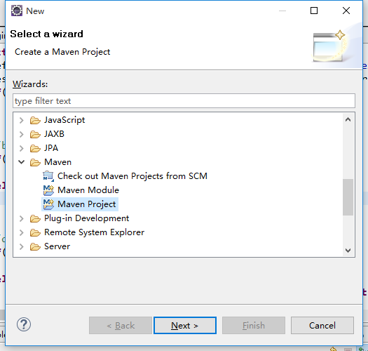
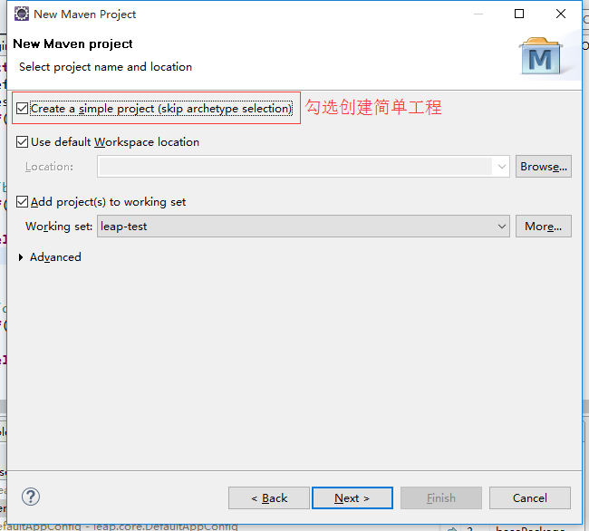
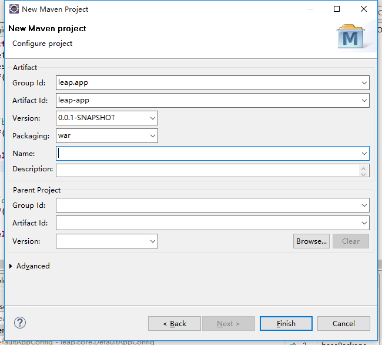
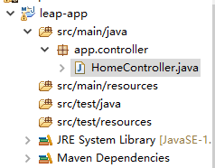
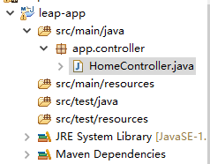
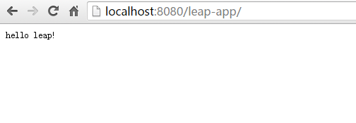
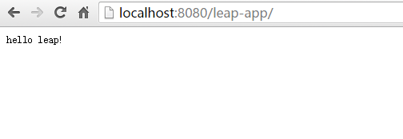

1. 创建空工程



2. 添加leap框架的依赖
在
pom.xml中添加如下依赖:
<dependency> <groupId>org.leapframework</groupId> <artifactId>leap</artifactId> <version>0.1.0-SNAPSHOT</version> <type>pom</type> </dependency>
3. 配置web.xml
在
main/webapp/WEB-INF目录下(没有该目录的话手动创建即可)创建web.xml文件:
<?xml version="1.0" encoding="UTF-8"?> <web-app xmlns:xsi="http://www.w3.org/2001/XMLSchema-instance" xmlns="http://java.sun.com/xml/ns/javaee" xsi:schemaLocation="http://java.sun.com/xml/ns/javaee http://java.sun.com/xml/ns/javaee/web-app_3_0.xsd" version="3.0"> <filter> <filter-name>app-filter</filter-name> <filter-class>leap.web.AppFilter</filter-class> </filter> <filter-mapping> <filter-name>app-filter</filter-name> <url-pattern>/*</url-pattern> </filter-mapping> </web-app>
4. 创建控制器
在包

代码如下:
app.controller下(没有这个包则自己创建，注意包名不能改变)HomeController.java类.

代码如下:
package app.controller; import leap.web.Contents; import leap.web.Results; public class HomeController { public void index() { Results.render(Contents.text("hello leap!")); } }
环境搭建完成
将应用部署到web服务器(如:tomcat)，访应用根目录即可看到:

说明我们的环境搭建成功!

说明我们的环境搭建成功!